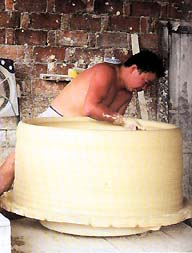
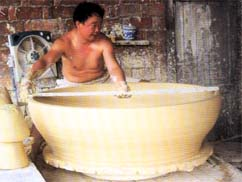
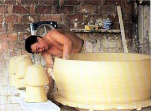
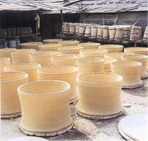
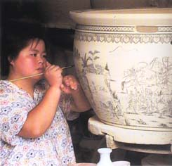

Jingdezhen
classical porcelain is unlike any other clay. Westerners have
described its properties as like throwing cottage cheese.
The first porcelain of late 10th century Song Dynasty consisted
of one ingredient, chinastone felspar, petunze in the local
dialect. The rock was ground into a paste by water-powered
hammer mills, a practice still in use today. The restrictions
of throwing wet powdered stone resulted in the intimate wares
of Song and Yuan dynasties. Kaolin clay, gaolin, was discovered
around 500 years ago during the Ming Dynasty in the mountain
village of Gaolin. This addition of white gaolin clay to the
petunze gave a structure to the porcelain and made possible
the throwing of large forms, both as complete pieces and in
the sectional cylinders of the body-height vases.
Since
the Ming period, the composition of the porcelain body has
remained 60 per cent chinastone and 40 per cent kaolin. Both
materials were traditionally made into brick shapes and mixed
together. Before the invention of the pugmill, craftsmen would
wedge a large mass of clay with their feet into a circular
mound. Now it is pugged and then lightly rolled towards the
body. Containing no ball clays and thus having little plasticity,
classical Jingdezhen porcelain is an adventure to throw. The
general rule is to throw thick walled pieces and, when thoroughly
dry, trim both the inside and outside to desired thickness.
As much as half the body will be trimmed away. The wheel is
run on a large and powerful electric motor with pulleys. An
old-fashioned lever that clicks into notches regulates the
speed, much like the old farm tractors. Thick bats, more than
one metre in diameter, are centred on the wheel head and stay
in place by the sheer weight of the clay.

The next step is to get a dozen or more of
the 10 kilo porcelain balls on to the wheel. The growing mound
is centred one ball at a time until a sufficient mass is attained.
Initial centring requires the help of an assistant grasping
the hands of the master thrower and forcing his energies through
the master’s hands to centre the clay. At some studios
two assistants steady the master’s hands for centring
and opening. The centred clay is then opened and the bottom
is quickly widened to its desired measure. The walls are raised
progressively and then shaped. An assistant’s hands
are used in the throwing until the final shape is near. The
last shaping is completed by the master alone until the form
reaches 1.5 m in diameter. The apparent simplicity and ease
belie a master’s touch with a difficult material. The
rim is carefully measured with a stick. Many shapes are parts
of a two or three piece finished form.
Sections are assembled after the pieces have
become bone dry in the sun and each section has been rough
trimmed. A slurry of pancake batter consistency is made with
the trimmings from the specific pieces to be joined. This
is poured on to the rim of the bottom piece and the top section
is lowered and centred. Within 10 seconds the trimmer begins
to shave the assembled form to a final shape. The tools are
kept razor sharp. It takes four men to haul away the porcelain
form on a wooden platform with handles and take it out into
the sun to dry. If it does not crack here it will make it
through the firing. Attempting to trim Jingdezhen porcelain
before it is dry is folly because the tools gouge out chunks
of clay. The tools and the process must follow the nature
of the material. A final soaking of the surface with a thick
round brush dipped in water reveals any imperfections such
air bubbles which must be removed.

Cobalt
blue qinghua decoration is frequently brushed on to to the
greenware by skilled painters. A clear glaze is applied with
spray gun – formerly by spray can and strong lungs.
All Jingdezhen wares are once-fired at 1300–1330°C
in propane gas kilns – the old coal-fired kilns are
being phased out. Enamels or gold lustres can be added with
an additional firing at 800°C.
Jingdezhen is the home of nine of the 26 Masters of Art and
Craft of China, the highest national accolade. This title
is generally reserved for the decorators. The unsung craftsmen
throwers are hidden away in factories and one stumbles upon
them to watch in awe at their tremendous skill and humbleness.
During the events of the Jingdezhen 1000 Years Celebration
of Porcelain taking place in 2004 and 2005, visitors will
be rewarded by a guided tour to the factory studios to learn
the secrets of classical porcelain techniques, including the
virtuosity of the master throwers.